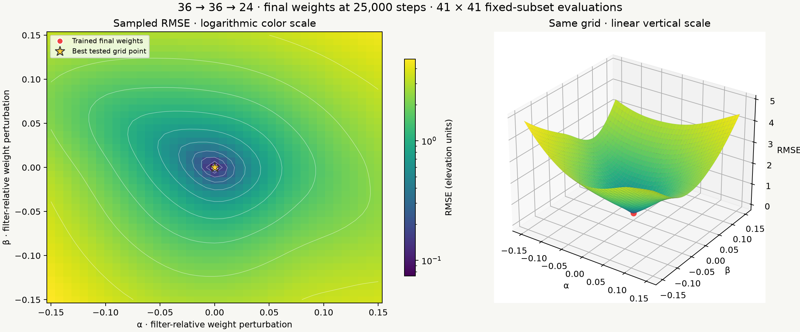

The trained 36 → 36 → 24 network at 25,000 steps is the red point. Each location perturbs its weights in two fixed directions; the height shows prediction error.

How to read the axes. θ(α, β) = θfinal + αd₁ + βd₂. Each direction has the same L2 norm as the corresponding trained neuron’s incoming weight vector; the output weights form one vector. A coefficient of 0.15 adds a perturbation equal to 15% of each vector’s norm. Directions are orthogonal within every vector. All biases remain fixed.
Sampling. 41 × 41 points over α, β ∈ [−0.15, 0.15], evaluated on the same 4,096 training samples, selected without replacement with seed 42. Perturbation directions also use seed 42. Nothing is trained for this view.
Limits. This is one two-dimensional slice through a much larger parameter space. The displayed error uses a training subset, not the full dataset or held-out samples. “Best tested” means the minimum among these grid points, not a newly optimized model or a global minimum. The contour colors use a logarithmic scale; the 3D height uses a linear scale.